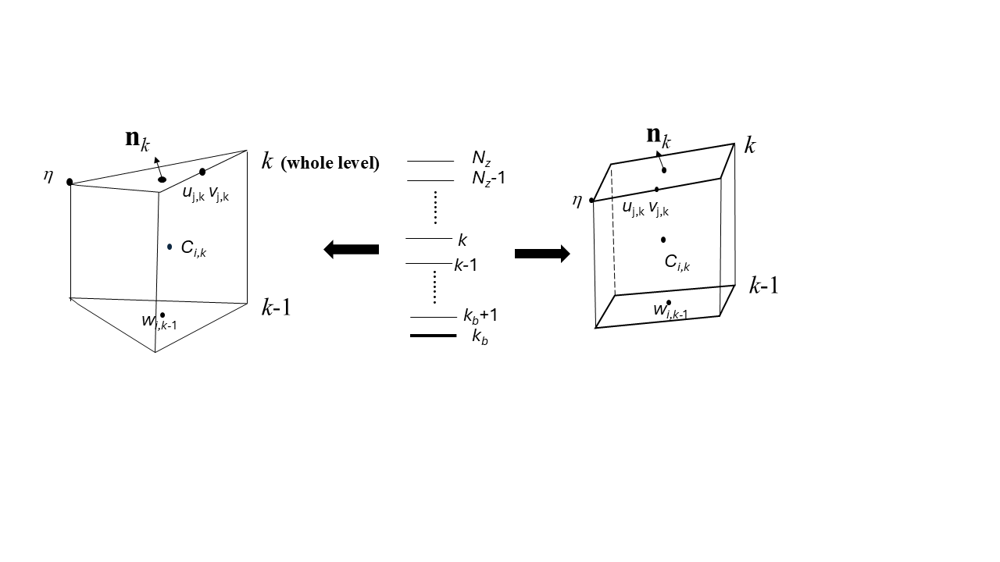

Geometry and discretization
As a FE model, SCHISM uses flexible UG in the horizontal and flexible vertical coordinate systems in the vertical dimension.
Horizontal grid¶
Hybrid triangular-quad elements are used in the horizontal, to take advantage of the superior boundary-fitting capability of triangles and efficiency/accuracy of quads in representing certain features like channels. Figure 1 shows an example of horizontal grid.

Figure 2 shows our convention of numbering local nodes/sides etc.

Vertical grid¶
Hybrid SZ grid¶
The 1st type uses a hybrid S (terrain-following generalized s-coordinates; Song and Haidvogel 1994) and shaved z coordinates, with the latter always being placed underneath the former at a prescribed demarcation depth \(h_s\). Note that the use of shaved z layers is optional and the users can use a pure \(S\) grid with a choice of \(h_s\) greater than the maximum depths in the grid. Figure 3 shows a \(SZ\) grid.

The transformation from \(S\) to \(Z\) is given by -
where \(\tilde{h} = min(h, h_s)\) is a “restricted” depth, \(h_c\) is a positive constant dictating the thickness of the bottom or surface layer that needs to be resolved, and \(\theta_b\) and \(\theta_f\) are constants that control the vertical resolution near the bottom and surface. As \(\theta_f \rightarrow 0\), the \(S\) coordinates reduce to the traditional \(\sigma\)-coordinates:
Where \(\tilde{H} = \tilde{h} + \eta\) is the restricted total water depth. For \(\theta_f \gg 1\), more resolution is skewed towards the boundaries, and the transformation becomes more nonlinear. If \(\theta_b \rightarrow 0\), only the surface is resolved, not the bottom, while if \(\theta_b \rightarrow 1\), both are resolved (Figure 4).

For typical coastal applications, we suggest \(\theta_b = 0\). Unfortunately, the \(S\) coordinate becomes invalid in shallow depth \(\tilde{h} \lt h_c\); under such circumstance, the traditional \(\sigma\) coordinates (Equation 2) are used.
\(LSC^2\) grid¶
The 2nd type of vertical coordinate uses localized \(\sigma\) Each grid node has its own vertical grid with a set of \(\sigma\) coordinates for maximum flexibility; the mismatch of # of vertical levels between adjacent nodes is treated with shaved cells near the bottom, thus the name Localized Sigma Coordinates with Shaved Cells (\(LSC^2\)).
Although there are many ways of generating a \(LSC^2\) grid, a convenient start is the Vanishing Quasi Sigma (VQS) suggested by Dukhovskoy et al. (2009). The essence of VQS is to first design a master (vertical) grid at selected reference depths, and then use this master grid to interpolate the local z coordinates at a grid node based on the local depth and 2 references depths that contains the depth (Figure 5). The original VQS also requires masking of thin layers near the bottom, and is not free of Z-like staircases near the bottom (Figure 5d). Since SCHISM is an implicit model, we do not need such special treatment, and furthermore, ‘fill in’ unmatched levels with shaved cells to get \(LSC^2\). As can be seen from Figure 5, a major advantage of \(LSC^2\), besides being very economical (as fewer/more # of levels are used in shallow/deep), is that it resembles a Z grid near the surface and interior of the water column while behaving like terrain-following grid near the bottom. As demonstrated in Zhang et al. (2015, 2016ab), \(LSC^2\) is instrumental in reducing unphysical diapycnal mixing and pressure-gradient errors (PGE). A well-designed \(LSC^2\) grid completely removes the need for bathymetry manipulation (e.g. smoothing/clipping), thus enabling a faithful representation of the bathymetry/topography, as demonstrated in those papers. However, some experience is required in designing a good \(LSC^2\) grid, and so beginners may want to start with the \(SZ\) grid.

Prisms¶
Regardless which type of vgrid is chosen, the basic 3D computational unit in SCHISM is a triangular or quad prism, with 3 or 4 vertical faces and uneven top and bottom faces (Figure 6). SCHISM solves all equations in the original Z space for consistency; even with spherical coordinates (lon/lat), the equations are not transformed but instead multiple coordinate frames are used (see below). A staggering scheme a la Arakawa-CD grid is used to define variables. The surface elevations are defined at the nodes. The horizontal velocities are defined at the side centers and whole levels. The vertical velocities are defined at the element centers and whole levels, and the tracer concentration is defined at prism center, as they are solved with a finite-volume method. The linear shape functions are used for elevations and velocities (the latter has a vertical linear shape function as well). For quad elements, the bi-linear shape function is used.

At the end of each time step, the vertical levels are updated to account for free-surface movement. Although method like Arbitrary Lagrangian Eulerian (ALE) can be used to march the vertical levels in time, this is not done at the moment. Therefore, the state variables are simply moved to the new vertical location without re-interpolation.
In the model sometimes vertical interpolation is required (e.g., calculation of baroclinc force). We use cubic spline interpolation in the vertical to minimize diffusion.
Polymorphism¶
The combination of \(LSC^2\) vertical grid (Zhang et al. 2015) and horizontal mixed-element grids results in an extremely flexible grid system that has great practical applications. We demonstrate this with a toy problem for coastal ocean-estuary-river system depicted in Figure 7. Since the tracer concentrations are defined at the prism centers, a row of quads and 1 vertical layer resembles a 1D model (Figure 7c). Similarly, a row of quads with multiple vertical layers leads to 2DV configuration (Figure 7c). Some parts of the shoals that are sufficiently shallow are discretized using 1 vertical layer (Figure 7b), which is a 2DH configuration. The deeper part of the domain is discretized using full 3D prisms, but with a larger number of layers in the deeper depths than in the shallow depths, in a typical \(LSC^2\) fashion (Figure 7a; Zhang et al. 2015). Different types of grids are seamlessly welded into a single SCHISM grid, resulting in greatest efficiency. With some care taken of the consistent bottom friction formulations across 1D, 2D and 3D, the model results show no discontinuity across different types of grids. The use of 1D or 2D cells in shallow areas also enhances numerical stability, as they are well suited and more stable for inundation process than 3D cells; e.g., the crowding of multiple 3D layers in the shallow depths is not conducive to stability.

References
Zhang, Y., Ateljevich, E., Yu, H-C., Wu, C-H., and Yu, J.C.S. (2015) A new vertical coordinate system for a 3D unstructured-grid model, Ocean Modelling, 85, 16-31.